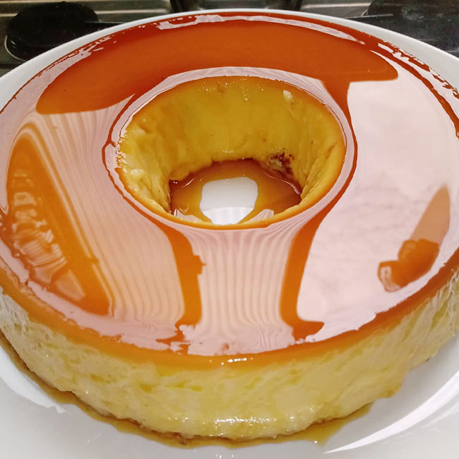
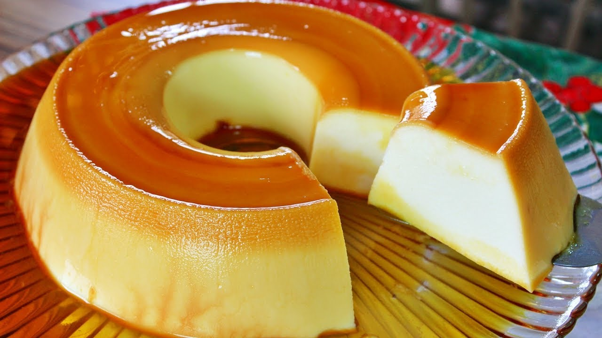

Pudim de Leite
Autora: Keiny Rivas Trompiz
Tempo de preparação: 1 Hrs
Ingredientes
- 1 xícara (chá) de açúcar
- 1 Leite MOÇA (lata ou caixinha) 395g
- 2 medidas (da lata) de Leite Líquido NINHO Forti+ Integral
- 3 ovos
Modo de Preparo
- Em uma panela de fundo largo, derreta o açúcar até ficar dourado.
- Junte meia xícara (chá) de água quente e mexa com uma colher.
- Deixe ferver até dissolver os torrões de açúcar e a calda engrossar.
- Forre com a calda uma forma com furo central (19 cm de diâmetro) e reserve.
Dicas
- É essencial que o pudim seja preparado em banho-maria para que asse de forma lenta e controlada, para atingir a textura ideal.
- Para que o seu pudim não forme furinhos, verifique se a temperatura do forno está regulada conforme indicação da receita. Leve a forma ao forno na grade superior, longe da chama.
